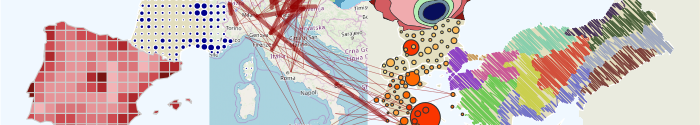

Cartographie avec R
18 décembre 2019
Introduction

Ce document se compose de trois parties permettant d’appréhender la création de cartes thématiques avec R.
Voici les packages dédiés à l’import, la manipulation, la transformation et l’affichage de données spatiales utilisés dans ce document :
- Depuis le CRAN :
banR, cartogram, cartography, linemap, maptools, mapview, nominatim, osmdata, png, raster, rayshader, sf, spatstat, tanaka. - Depuis GitHub :
mapinsetr, nominatim, photon. Il faut utiliser le packageremotespour les installer
Objectifs
- Savoir créer et manipuler des données spatiales
- Savoir créer des cartes thématiques conformes aux règles de la sémiologie graphique et de la cartographie
- Connaitre des modes de représentation plus complexes

La version en ligne de ce document est sous licence Creative Commons Attribution-NonCommercial-ShareAlike 4.0.